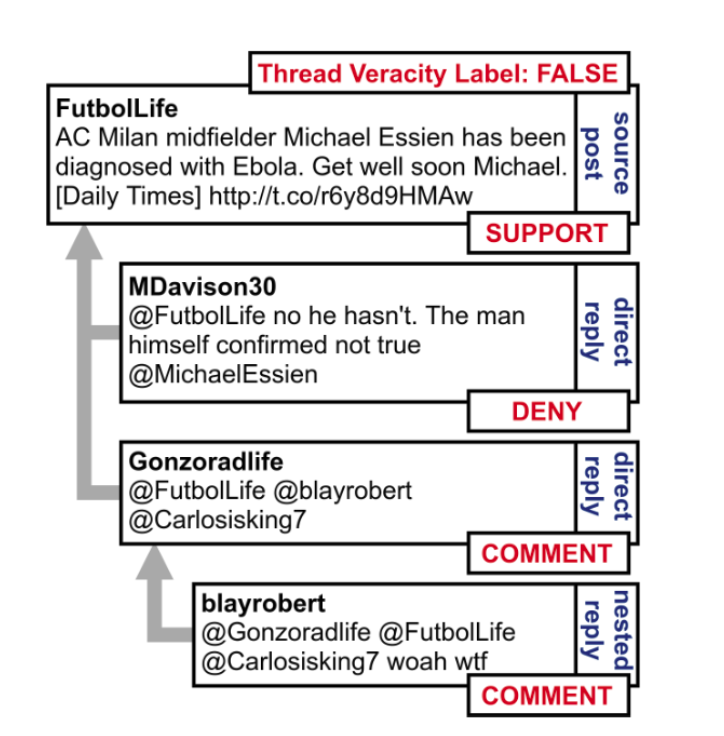
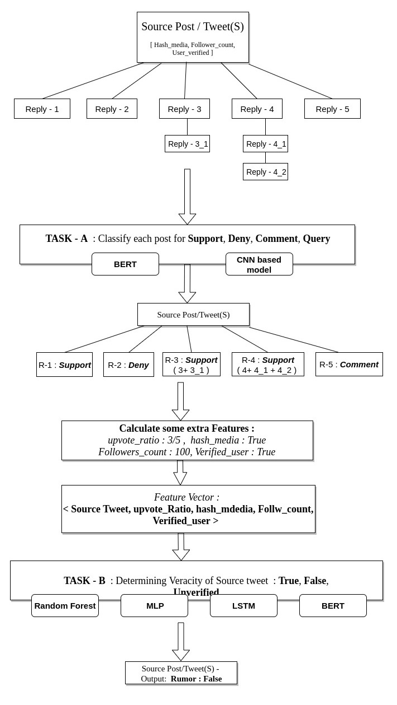
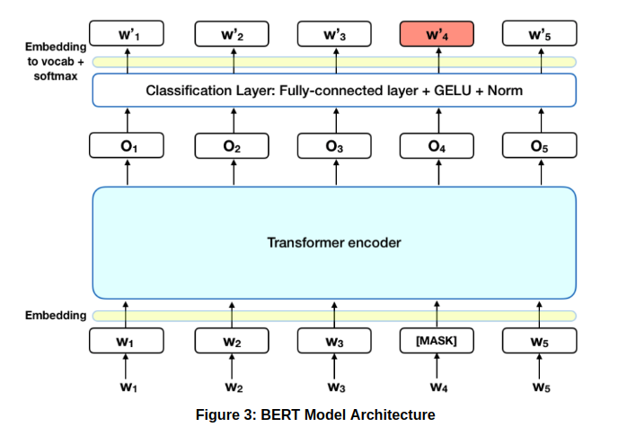

About us
Darshan Kansagara

Abhijeet Panda
Sarvat Ali
Aniruddha Deshpande

The first task involved Stance Classification of the responses to the source tweet is the first subtask
for this project. This involves the categorization of these responses into the following categories:
Support: The author of the response supports the veracity of the rumor they are responding
to.
Deny: The author of the response denies the veracity of the rumor they are responding to.
Query: The author of the response asks for additional evidence in relation to the veracity of
the
rumor they are responding to.
Comment : The author of the response makes their own comment without a clear contribution to
assessing the veracity of the rumor they are responding to.
The second task of Veracity classification simply involved classifying the source post into
“Rumour / Not a Rumour / Unverified” classes. For this task we decided to go with several
baseline and
deep learning based models. This was done to achieve maximum possible accuracy scores over a dataset
which is significantly small in size.


CNN based model using ELMo embedding
We implemented a CNN-based neural architecture using Elmo embeddings of post text combined with its auxiliary features. Traditional embedding methods such as word2vec or GloVe work independently of the context and always map the same word to the same vector. In contrast, ELMo recent embedding approach is a bidirectional LSTM network that considers the context of the word, that the same word can have different meanings depending on its context. We represent each text to ELMo embedding, Next, the embedded text is fed into many convolutional layers. Each convolution operation is batch normalized after a ReLU activation.
Transformer based model : BERT
We used transformer based model BERT (Bidirectional Encoder Representations from Transformers) bidirectional training of Transformer, a popular attention model, to language modeling. Transformer is an attention mechanism that learns contextual relations between words (or sub-words) in a text this approach allows the model to learn the context of a word based on all of its surroundings (left and right of the word). This already Pretrained model on large corpora such as Wikipedia dump and books corpus can be fine-tuned for our task of stance classification. We then used this model for sentence pair-wise classification where each pair corresponds to the source text and its reply and output is whether the given reply supports, deny, query or just comment to given source tweet. We trained the model with various parameters.

We experimented with several features provided as a part of the dataset but we found the following
features most optimal for training the model:
Upvote Ratio, Availability of Media, Is Verified, Number of Followers
After finalising the optimal features set as mentioned above we tried classifier models to classify
rumour As true,false or unverified in terms of confidence score.
We tried baseline models such as naive bayes,Decision tree,Random forest classifier to achieve results
as given.
Random Forest : It consists of a large number of individual decision trees that operate as an ensemble. Each individual tree in the random forest spits out a class prediction and the class with the most votes becomes our model’s prediction. Ideal behind using this model is s large number of relatively uncorrelated models (trees) operating as a committee will outperform any of the individual constituent models.
Multilayer Perceptront : A multilayer perceptron (MLP) is a class of feedforward artificial neural network (ANN).The MLP consists of three or more layers (an input and an output layer with one or more hidden layers) of nonlinearly-activating nodes. Since MLPs are fully connected, each node in one layer connects with a certain weight w to every node in the following layer.
Gradient Boosted Trees : This technique employs the logic in which the subsequent predictors learn from the mistakes of the previous predictors.
| Model | Accuracy |
|---|---|
| Transformer based model ( BERT ) : | 72% |
| CNN based Model | 77% |
| Model | Accuracy |
|---|---|
| Random Forest | 65% |
| Multilayer Perceptron MLP | 48% |
| Gradient Boosted Trees | 60% |
| LSTM | 55% |
| BERT | 63% |